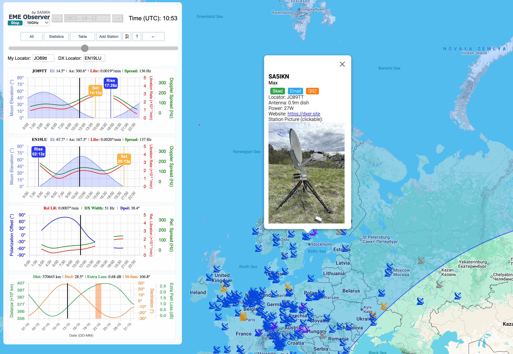

To add a new EME station to EME Observer or to update an existing station entry, please submit the station details according to the operating band as outlined below.
For stations operating on 432 MHz and higher bands (except 902MHz), submit station details to the EME Directory maintained by Jan PA0PLY: https://www.pa0ply.nl/eme-directory/
For stations operating on 222 MHz and 902 MHz, send station updates to Martin PJ4MM - click to email or see his QRZ.com profile. Feel free to submit station pictures for these two bands to Martin too.
Currently there is no station database for 144MHz. If you would like to commit to creating and maintaining one for the EME community, let us know.
To include a station picture in the EME Observer station profiles, send the image to Max SA5IKN - click to email or see his QRZ.com profile. Please specify which band the picture applies to. Each band may use its own picture, or a single picture may be used for all bands.
Example of an EME Observer station profile with a picture.